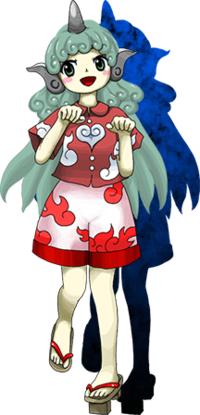

- Welcome to Touhou Wiki!
- Please register to edit. For assistance, check in with our Discord server or IRC channel.
Aunn Komano

|
Attention: This article is a stub and it needs expanding with more information related to the article's topic. If you can add to it in any way, please do so. |
Aunn Komano | |
|---|---|
|
Aunn Komano in Hidden Star in Four Seasons The Guardian Beast Devoted to Shintoism and BuddhismMore Character Titles | |
| Species | |
| Abilities |
Locating Shintoism and Buddhism |
| Location | |
Music Themes | |
| |
Appearances | |
| Official Games | |
| |
| Print Works | |
| |
Aunn Komano (高麗野 あうん Komano Aunn) is a komainu who guards places of religious worship.
General Information[edit]
Aunn appears as the Stage 3 Boss in Hidden Star in Four Seasons. She is a komainu youkai who guards places of religious worship. This includes the Hakurei Shrine, even though Reimu was unaware Aunn was protecting her shrine until Hidden Star in Four Seasons. Ironically, Reimu beats her up for intruding.
She is content with guarding sacred places, considering it a kind of "volunteer work".
Abilities[edit]
- Ability to locate Shintoism and Buddhism
Background Information[edit]
Backstory[edit]
Prior to the events of Hidden Star in Four Seasons, Aunn was just a normal komainu statue. During the incident, she became a sentient youkai due to the magical energy coming out from the backdoor that Okina Matara placed on her. Even as a statue she was conscious of her surroundings, and she was able to see and recognize Reimu and other characters while in that state. Not only that, apparently she could see from the inside of various statues, as she explained how she was watching not only the Hakurei Shrine, but also other places.
Name[edit]
Her full name is Aunn Komano (高麗野 あうん). The characters for Komano (高麗野) are spelled with ko (高) "tall, high", ma (麗) "lovely, beautiful, graceful", and no (野) "plains, field".
Komano (高麗野) is a reference to her species Komainu (高麗犬), as it shares the first two characters. Her last name can be roughly translated as "Korean/Goryeo plains".
The name Aunn (あうん) is representative of a traditional characteristic of komainu statues. Komainu generally come in pairs; one will have their mouth open, and the other closed. The open mouth is said to be pronouncing Sanskrit "a", and the closed one "un" – together forming the sound Aum / Om (ॐ), which is a syllable sacred in many religions including Buddhism and Hinduism, signifying the start and end of everything. The sound is transliterated in Japanese as A-un (阿吽).
Design[edit]
Aunn has light skin, green eyes, and long seafoam-color hair. Her hair is multi-layered, the longest of which extends down past her waist into multiple points. A shorter shoulder-length layer lies beneath with inward curls, as do her bangs. She has a grey cylindrical horn on top of her head and grey horn-shaped ears. These have a magatama-shaped design where the large base is where her ears would be and curving upward and out, with an accented ridge running their length; the tip very slightly curves upward in the opposite direction. Her eyebrows, usually hidden underneath her bangs, are unusually round.
Aunn wears a red short-sleeved collared Kariyushi shirt with 3 round white buttons down the middle, one up top and two below. Her shirt is decorated with white cloud designs and the design forms a heart shape in the middle. She also wears white shorts with wide openings for her legs, adorned with bright red cloud designs and a thick, darker red trim on the bottom edge. She wears a pair of two-tooth geta that have red hanao. She also has a curly tail, not visible on her game portrait[1], but noticeable in her Wild and Horned Hermit appearance.
Story[edit]
Games[edit]
- Hidden Star in Four Seasons
Literature[edit]
- Wild and Horned Hermit
In chapter 42 of Wild and Horned Hermit, Aunn reassures Reimu and Kasen that the Four Seasons incident is over. The two question who she is, and Aunn cheerfully reminds them that she has been watching them for a long time. At the celebration of the end of the incident, Okina Matara reveals that she created Aunn from a komainu statue at the front of the shrine.
Relationships[edit]
Minor Relationships[edit]
Aunn claimed to have been guarding the shrine at times when Reimu was gone. Reimu seemingly has no idea who Aunn is. In chapter 42 of Wild and Horned Hermit it is revealed that before the four seasons incident she was a simple komainu statue, but Aunn was still capable of seeing and sensing her surroundings. This explains why Aunn knew Reimu and the others, but no one knew about her.
While one-sided at the time, Aunn acted as if she'd known Marisa for quite some time when they first encountered each other. Like with Reimu, Marisa has no idea who Aunn is.
- Okina Matara (creator)
Okina is the one responsible for Aunn becoming a sentient youkai. This was caused by the magical energy coming out from one of Okina's doors on the back of a regular komainu statue.[2]
Spell Cards[edit]
| Name | Translated | Comments | Games | Stage | ||
|---|---|---|---|---|---|---|
| Total: 8 | ||||||
| 犬符「野良犬の散歩」 | Dog Sign "Stray Dog's Walk" | HSiFS | St. 3: E/N | |||
| 狗符「山狗の散歩」 | Hound Sign "Mountain Hound's Walk" | HSiFS | St. 3: H/L | |||
| 独楽「コマ犬回し」 | Spinning Top "Koma-Inu Spin" | HSiFS | St. 3: E/N/H | |||
| 独楽「カールアップアンドダイ」 | Spinning Top "Curl Up And Die" | HSiFS | St. 3: L | |||
| 狛符「独り阿吽の呼吸」 | Koma Sign "Solitary A-Un Breathing" | HSiFS | St. 3: E/N/H/L | |||
| 独楽「コマ犬大回転」 | Spinning Top "Koma-Inu Giant Slalom Spin" | VD | Friday - 2 | |||
| 独楽「阿吽の閃光」 | Spinning Top "A-Un Flash" | VD | Friday - 3 | |||
| 夢犬「１０１匹の野良犬」 | Dream Dog "101 Stray Dogs" | VD | Wrong Sunday - 7 | |||
Additional Information[edit]
Fandom[edit]
Official Profiles[edit]
|  | ○３面ボス 神仏に心酔する守護神獣 高麗野 あうん 種族：狛犬 狛犬。一人で、獅子と狛犬の二つの性質を持つ。 博麗神社、守矢神社、命蓮寺、こういった人間の信仰を集めそうな場所を 神社の桜が綺麗だったので、博麗神社で花見をしていたところ今回の騒動が始まった。 巫女と戦うと言うのは彼女にとっては不本意な戦闘であるが、何故か楽しかった。 自分の心の中に何か底知れぬ霊力を見いだし、背中に冷たいものが流れるのを感じた。 |
Stage 3 Boss: The Guardian Beast Devoted to Shintoism and Buddhism Aunn Komano Species: Komainu A komainu. She's a single individual with the properties of both a shishi and a komainu. She finds places where human faith gathers, like the Hakurei Shrine, Moriya Shrine, Myouren Temple and so on, then mooches around and guards the place without being asked. Since the Hakurei Shrine's cherry blossoms were so beautiful, she was having a flower-viewing at the shrine when the commotion began. She was somewhat disappointed to find herself fighting a shrine maiden, but it was somehow fun. She found a strange, bottomless spiritual power welling up in her heart, and felt something cold running down her back. |
Official Sources[edit]
- 2017/05/07 Hidden Star in Four Seasons trial - omake.txt (trial profile, stage 3 dialogue)
References[edit]
- ↑ Aunn Komano's theme
- ↑ Wild and Horned Hermit - Chapter 42
| This page is part of Project Characters, a Touhou Wiki project that aims to write proper descriptions for all official characters of Touhou Project. Please keep the character page guidelines in mind when contributing. |